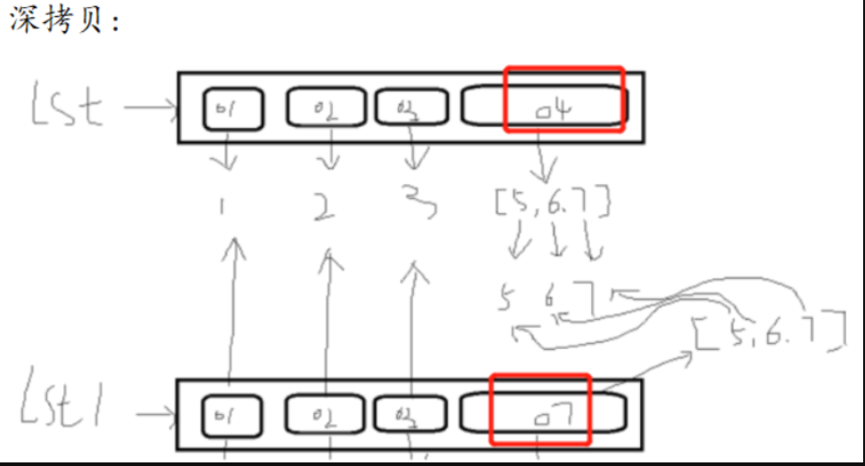

s = "给阿姨倒杯卡布奇诺"反向输出S:
print(s[::-1])
赋值:多个变量指到相同内存
浅拷贝中所有的元素，不管第几层的元素,都会共用,只有最外层的变量会有不同的内存地址.
深拷贝所有的不可变元素,都会共用,所有可变元素不共用,都有自己的内存地址.
总结:
浅拷贝
个人理解:浅拷贝,旧列表只有完整替换某个元素或者增加一个元素时才不会影响新列表,
如果旧列表变更某个元素中的部分变量(可变元素,字符串的一部分)时才会影响新列表,
使得新旧列表一样.
浅拷贝的时候只拷贝第一层元素
浅拷贝在修改第一层元素(不可变数据类型)的时候,拷贝出来的新列表不进行改变
浅拷贝在替换第一层元素(可变数据类型)的时候,拷贝出来的新列表不进行改变浅拷贝在修改
第一层元素中的元素(第二层)的时候,拷贝出来的新列表进行改变
深拷贝
深拷贝开辟一个容器空间(列表),不可变数据公用,可变数据数据类型(再次开辟一个新的空间)
空间里的值是不可变的数据进行共用的,可变的数据类型再次开辟空间
import copy
lst1 = copy.deepcopy(lst)
# 深拷贝
import copy #导入
lst = [1,2,3,[5,6,7]]
lst1 = copy.deepcopy(lst) # 深拷贝
lst[-1].append(8)
print(lst)
print(lst1)
lst = [1,2,3,[5,6,7,[8,10,9]]]
import copy
lst1 = copy.deepcopy(lst)
print(id(lst[-1][-1]))
print(id(lst1[-1][-1]))
